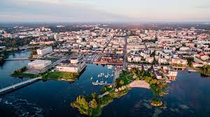

Oulu sijaitsee Pohjois-pohjanmaan maakunnassa, Perämeren rannikolla. Oulu toimii Pohjois-pohjanmaan maakunnan maakuntakeskuksena, koska on Pohjois-pohjanmaan suurin kaupunki, suomen 31. suurin kaupunki. Oulussa sijaitsee suomen toisiksi suurin lentokenttä, josta pääsee suoralla lennolla pohjoismaiden aleelle, ja vaihtolennolla helsinkiin pitkiä matkoja varten.
Oulun pohjoisen sijainnin takia, Oulun ilmasto on sateinen ja talvella varsin kylmä ja luminen. Oulussa pystyy talvisin huoletta menemään meren jäälle pilkille, hiihtämään tai jopa moottorikelkka ajelulle. Oulun luontoon kuuluu ylänköjä, suuria peltoja, järviä ja saaristoa, joka tekee siitä erinomaisen vierailukohteen kenelle tahansa, joka haluaa lähteä Suomen pohjoisia osia tutkimaan.
